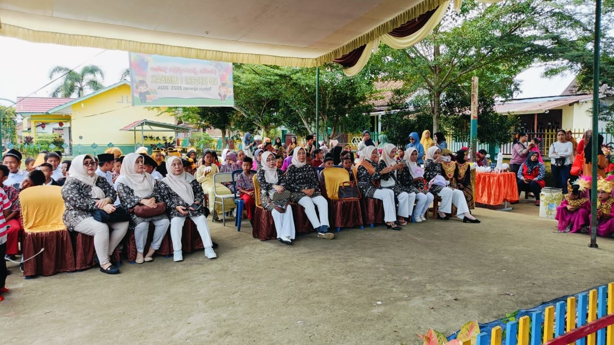

SDN 1 Lembak dengan bangga mengumumkan penyelenggaraan Pentas Seni dalam
rangka Gelar Karya P5 (Projek Penguatan Profil Pelajar Pancasila) untuk
akhir tahun pelajaran 2023/2024. Acara ini akan menjadi puncak perayaan
hasil karya dan kreativitas siswa-siswi selama satu tahun ajaran penuh.
Pentas Seni ini merupakan salah satu wujud nyata dari implementasi
kurikulum merdeka yang bertujuan untuk membentuk profil pelajar Pancasila
yang berkarakter, kreatif, dan inovatif. Dalam acara ini, siswa-siswi SDN
1 Lembak akan menampilkan berbagai macam hasil karya dan bakat mereka yang
telah dikembangkan melalui berbagai projek pembelajaran sepanjang tahun.
Setiap penampilan dan karya yang ditampilkan merupakan hasil kerja keras,
ketekunan, dan dedikasi para siswa serta bimbingan dan arahan dari para
guru.
Acara ini bukan hanya sekadar ajang unjuk bakat, tetapi juga merupakan
kesempatan untuk mempererat hubungan antara sekolah, siswa, dan orang tua.
Dengan menghadirkan beragam penampilan seni dan pameran karya, diharapkan
dapat memberikan inspirasi dan motivasi bagi semua yang hadir untuk terus
mendukung perkembangan pendidikan yang holistik dan integratif.
Berikut beberapa dokumentasi Pentas Seni SDN 1 Lembak - Gelar Karya P5
Akhir Tahun Pelajaran 2023/2024